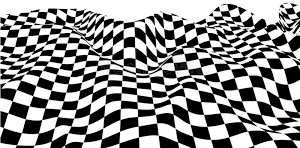
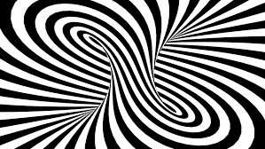
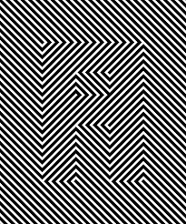
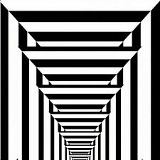

What is an Illusion Art?
The term illusionism is used to describe a painting that creates the illusion of a real object or scene, or a sculpture where the artist has depicted figure in such a realistic way that they seem alive. Illusion art is also known as Optical Art. Optical Art's short form is OP Art. Generally illusion art are in black and white colour but sometimes they are in colours. According to me I love illusion arts which are in black and white colour because they look more realistic than the coloured ones.
What type of art is illusion art?
Op art, short for optical art, is a style of visual art that uses optical illusions. Op art works are abstract, with many better known pieces created in black and white. Typically, they give the viewer the impression of movement, hidden images, flashing and vibrating patterns.


   
Trivia Time